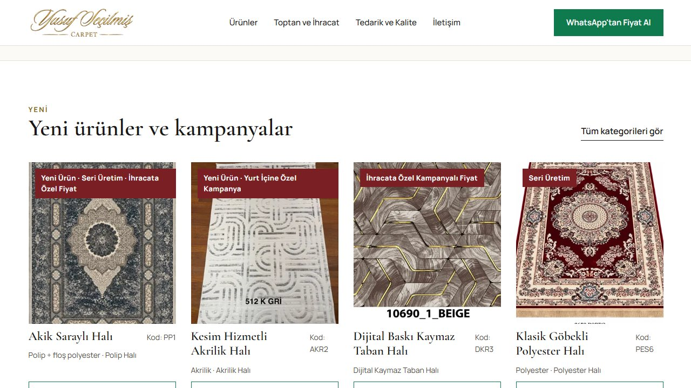
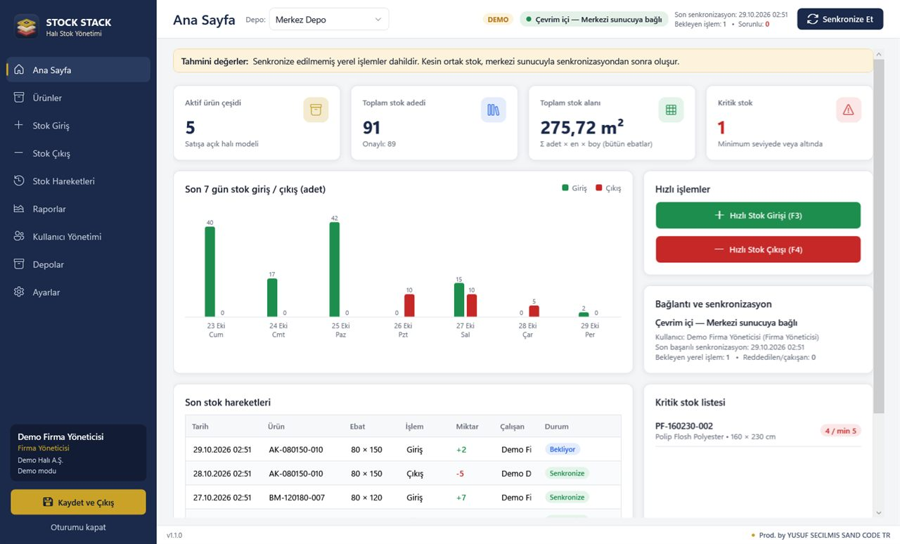
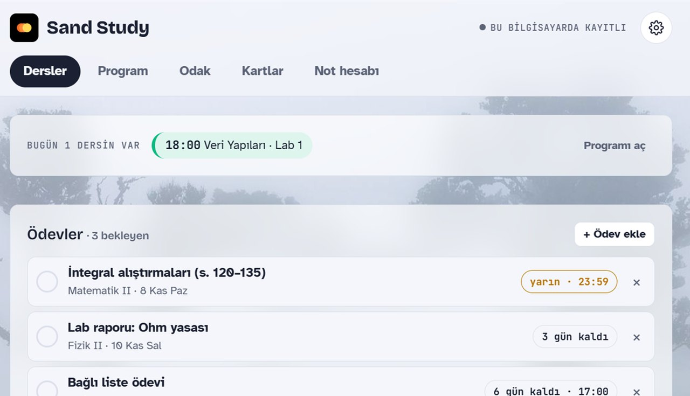
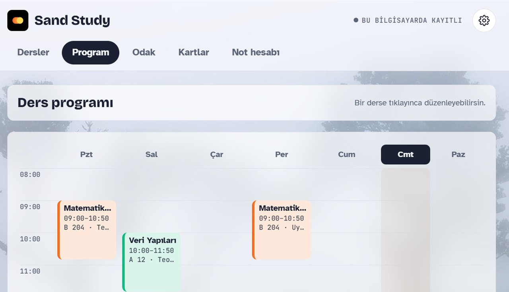
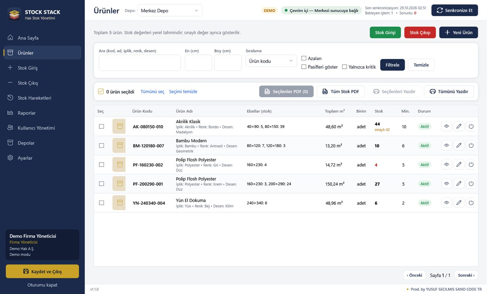
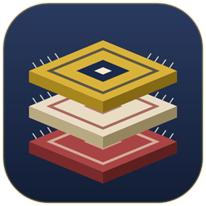

Aracı yok
Satış temsilcisiyle değil, işi yapan kişiyle konuşursunuz. Değişiklik isteğiniz doğrudan koda yansır.
Gaziantep · Web & yazılım stüdyosu
Kurumsal web siteleri, e-ticaret, Windows masaüstü uygulamaları ve işletmenize özel yazılımlar geliştiriyoruz. Tasarımdan Microsoft Store yayınına kadar her adım bizde.
Hakkımda
Sand.Code'un kurucusuyum. Tasarımı da kodu da kendim yapıyorum; yani projenizi anlattığınız kişi, onu geliştiren kişiyle aynı.
İşe web siteleriyle başladım, bugün işletmelerin günlük işini kolaylaştıran Windows uygulamaları da geliştiriyorum. Halı sektöründen bir firma için yaptığım stok programı Stock Stack ve öğrenciler için hazırladığım Sand Study, Sand Code adıyla Microsoft Store'da yayınladığım kendi ürünlerim.
Benimle çalışınca
Satış temsilcisiyle değil, işi yapan kişiyle konuşursunuz. Değişiklik isteğiniz doğrudan koda yansır.
Yayında olan sitelerimi ve Microsoft Store'daki uygulamalarımı karar vermeden önce kendiniz deneyebilirsiniz.
Alan adı, hosting, SSL ve e-posta kurulumu dahil; size sadece kullanmak kalır.
Kapsama göre net bir takvim konuşur, süreç boyunca her adımı size gösteririm.
Bakım, güncelleme ve teknik destekte yanınızda olmaya devam ederim.
Hazır şablon değil; sitenizi ya da programınızı sizin işleyişinize göre tasarlarım.
Fikrinizi tek bir mesajla anlatın, size uygun çözümü ve fiyat önerisini birlikte netleştirelim.
WhatsApp'tan yazHizmetlerimiz
Sadece web sitesi yapmıyoruz. İşletmenizin günlük işini kolaylaştıran uygulamaları da tasarlıyor, geliştiriyor ve yayınlıyoruz.
Marka kimliğinizi yansıtan, hızlı, SEO uyumlu ve her ekranda kusursuz çalışan siteler ve tanıtım sayfaları.
Yönetim panelli, güvenli ödeme altyapılı, satış odaklı online mağazalar.
İnternet kesilse de çalışan, hızlı ve kullanımı kolay programlar. Kurulum dosyasıyla teslim.
Stok, sipariş, depo ve raporlama gibi işlerinizi tek ekrana toplayan, size özel sistemler.
Uygulamanızı paketliyor, mağaza sayfasını hazırlıyor ve Microsoft Store'a yüklüyoruz.
Google görünürlüğü, hız optimizasyonu ve teslimden sonra bakım, güncelleme.
Neden Sand.Code?
Hedefimiz sadece güzel görünen değil, gerçekten işe yarayan ürünler hazırlamak. Web sitesinde de masaüstü uygulamada da aynı özeni gösteriyor; tasarımı, güçlü altyapıyı ve iyi kullanıcı deneyimini bir araya getiriyoruz.
Çalışma sürecimiz
İşinizi, hedef kitlenizi ve ihtiyaçlarınızı ayrıntılı inceliyoruz.
Markanıza özel, kullanıcı dostu arayüzler hazırlıyoruz.
Temiz kod ve performans odaklı yapıyla sitenizi kuruyoruz.
Son testlerden sonra yayına alıyor, destek vermeye devam ediyoruz.
Portföy

Toptan halı tedarikçisi için ürün kataloğu, kampanyalar ve WhatsApp'tan fiyat talebi olan kurumsal site.
Siteyi gör ↗

Öğrenciler için sınav takibi, ders programı, ödevler, hatırlatıcılar ve not hesabı. Microsoft Store'da, ücretsiz.
İncele →Uygulamalarımız
Web sitelerinin yanında masaüstü yazılımlar da üretiyoruz. Uygulamalarımız Microsoft Store üzerinden yayınlanıyor.
Eğitim · Ücretsiz
Sınavların, ders programın ve ödevlerin tek uygulamada. Öğrenciler için masaüstü uygulaması; Microsoft Store'da, ücretsiz.


İşletme · Stok yönetimi

Stock StackHalı depoları için Windows stok yönetimi. Birden fazla bilgisayar aynı stoğu görür; internet kesilse de çalışmaya devam eder.
Kullandığımız teknolojiler
Sıkça sorulan sorular
Hayır. Web sitelerinin yanında Windows masaüstü uygulamaları ve işletmelere özel yazılımlar da geliştiriyoruz. Stok yönetim programımız Stock Stack ve öğrenciler için hazırladığımız Sand Study buna örnek.
Evet. Uygulamanızı mağaza için paketliyor, açıklama, ekran görüntüsü ve gizlilik politikasını hazırlayıp Microsoft Store'a gönderiyoruz.
Projenin kapsamına göre ortalama 7 ile 15 iş günü arasında.
Evet. Domain, hosting, SSL, e-posta kurulumu ve teknik destek dahil anahtar teslim hizmet veriyoruz.
Hazırladığımız tüm siteler telefon, tablet ve masaüstünde tam uyumlu çalışır.
Tüm projeler teknik SEO altyapısıyla hazırlanır. İsterseniz profesyonel SEO hizmeti de sunuyoruz.
Evet. Bakım, güncelleme ve teknik destekte yanınızdayız.
İletişim
Yeni bir web sitesi, e-ticaret, masaüstü uygulama ya da özel yazılım ihtiyacınız varsa yazın; en kısa sürede dönüş yapayım.